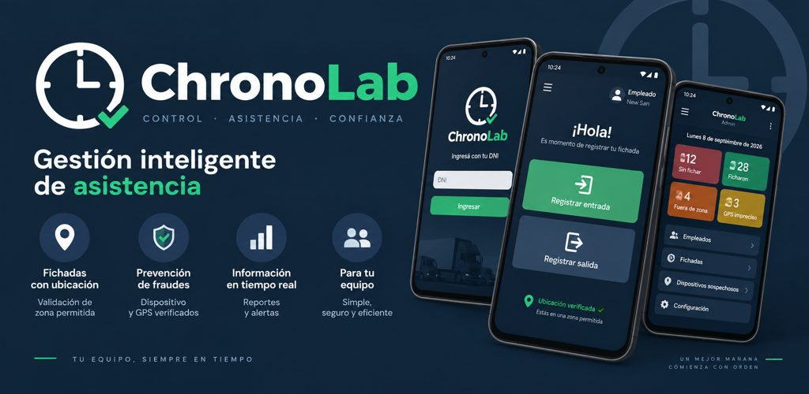

Fichada con ubicación
Al registrar la entrada o la salida, la app verifica que la persona esté dentro de una ubicación autorizada por la empresa. Sin seguimiento continuo.
Tu personal ficha desde Android con validación de ubicación, incluso sin conexión. Vos revisás, corregís y analizás todo desde una plataforma web pensada para la operación diaria.

Un recorrido corto por el control de asistencia y las fichadas desde Android.
ChronoLab tiene dos partes que trabajan juntas: la app Android para fichar y gestionar, y la plataforma web para supervisar y administrar.
Al registrar la entrada o la salida, la app verifica que la persona esté dentro de una ubicación autorizada por la empresa. Sin seguimiento continuo.
Si no hay señal, la fichada queda guardada en el teléfono y se envía sola cuando vuelve la conexión.
Cada persona entra con su DNI. Sin correos ni cuentas extra: el administrador da de alta al personal y listo.
Control de dispositivos y de precisión del GPS: las fichadas dudosas quedan marcadas para que alguien las revise.
El administrador ve quién fichó, quién no y quién está fuera de zona, con el historial de cada empleado.
Las fichadas se exportan desde el teléfono para liquidar sueldos o archivar.
Presentismo del mes, jornadas completas, fuera de zona y alertas del período, por empleado. Enterprise.
Aprobá o rechazá las fichadas observadas y corregí horarios, con registro de quién hizo cada cambio.
Días por ley o acordados, quién se va y cuándo, cuántas personas faltan a la vez y un consolidado anual que se descarga en Excel. Enterprise.
Altas, bajas, tipos operativos, horarios, sectores y ubicaciones permitidas, desde la computadora. Enterprise.
Feriados, jornadas reducidas, licencias y ausencias justificadas, para que el presentismo sea real. Enterprise.
Fichadas y reportes por período, listos para sueldos o auditorías.
Precios en dólares estadounidenses. El plan anual tiene un 5 % de descuento.
Gratis 30 días
Hasta 10 empleados. La prueba recorre los planes para que veas todo antes de decidir:
USD 24,99 / mes
o USD 284,89 por año · ahorrás USD 14,99
Para registrar, controlar, revisar y exportar fichadas.
USD 149,99 / mes
o USD 1.709,89 por año · ahorrás USD 89,99
Para supervisar, analizar y administrar todo desde la web.
La contratación y el pago se hacen fuera de la app, por correo o WhatsApp. Las funciones disponibles dependen del plan contratado y de los permisos de cada usuario. Detalle completo en la página de planes.
No. Si el teléfono no tiene conexión, la fichada se guarda y se envía sola cuando vuelve la señal.
No. La ubicación se toma una sola vez, en el momento en que la persona registra la entrada o la salida, para verificar que esté dentro de una ubicación autorizada por la empresa. No hay seguimiento continuo ni en segundo plano.
Con su DNI. El administrador los da de alta desde la app (o desde la web, en Enterprise) y cada persona ficha desde su propio teléfono Android.
La información de tu empresa no se borra al vencer la prueba. Para seguir usando ChronoLab, contratás un plan y continuás donde estabas.
Escribinos por correo o WhatsApp. La contratación y el pago se hacen fuera de la app, y el cambio de plan lo aplicamos nosotros.
Cada empresa ve solo su propia información. Podés leer la política de privacidad y cómo solicitar la eliminación de datos.
Contanos cuántas personas trabajan y cómo se organizan. Te ayudamos a configurar la prueba y a elegir el plan.